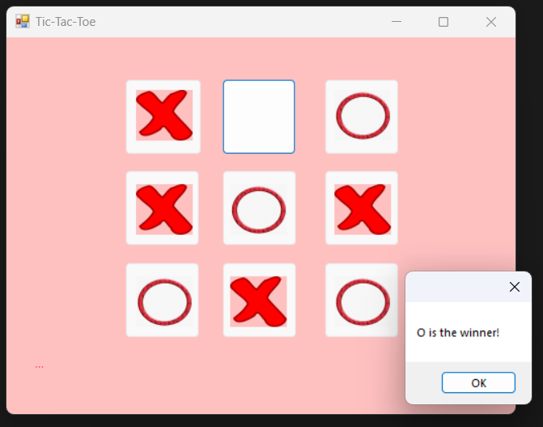

Game Programming with Data Structures
2-player Tic-Tac-Toe game in C#
QGame
Q-Puzzle game is a puzzle game consisting of several colored doors and boxes. The number of doors and boxes may vary, however, for the same-colored boxes there must be at least one matching colored door. The control contain four directional buttons: Up, Down, Left and Right. The player select a box and use the control pad to move the box. The box will continue to move until it hits a wall or another box. If there is a door with the same color of the box in the direction of its movement, the box will be removed. The objective is to remove all the boxes through their corresponding- colored doors and the game ends.Please watch the demo below!
MonoGame
The fight game is a 2D Game developed using MonoGame where two players fight each other. Each fighter has a life bar. Once the life runs out, the fighter dies. The game has a soundtrack and audio effects. Using the keyboard arrows, the player can move the character, and using the tab button, the player can jump and dodge his opponent.